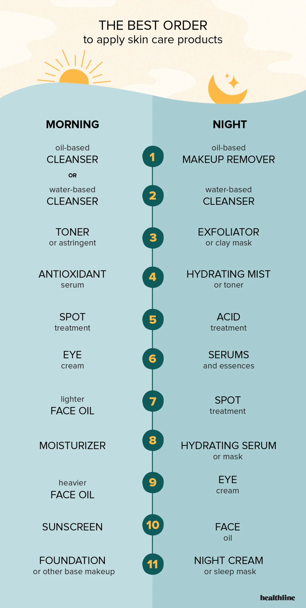

Skin Care Routines: The Difference Between Morning and Night!
A consistent morning and night skincare routine is essential for maintaining healthy, radiant skin. In the morning, the focus is on protection, as the skin faces external elements like sunlight, pollution, and environmental stressors throughout the day. This routine includes cleansing to refresh the skin, applying a lightweight moisturizer, and using sunscreen to shield against harmful UV rays that can cause premature aging and skin damage.
The night routine, is all about repair and rejuvenation. During sleep, the skin goes into recovery mode, so nighttime skincare often involves a deeper cleanse to remove makeup and impurities, followed by nourishing serums or oils to help restore moisture and address specific skin concerns. This routine prepares the skin for its natural renewal process, allowing for a healthier and more balanced complexion.
By tailoring these routines to suit day and night needs, you can help protect, nourish, and support your skin’s long-term health.

Learn More About the Order of Skin Care